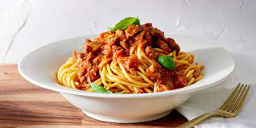

Spaghetti receta

Receta para hacer spaghetti
Ingrendientes
- 1 paquete de spaghetti
- 5 jitomates
- 1/2 cebolla
- 2 dientes de ajo
- 1/4 de litro de puré de tomate
- Orégano
- Albahaca
- Perejil
Preparación
- Hervimos el agua y cocemos el espagueti sin sal hasta que obtenga una consistencia suave.
- En una cacerola hervimos también los jitomates con agua y retiramos para quitarles la piel y picar en cuadros pequeños.
- Freímos el ajo picado, la cebolla y el jitomate y licuamos todo, ponemos a sazonar agregando orégano y albahaca, añadimos el espagueti y servirmos con un poco de perejil y queso panela rallado.
- Y, por último, compleméntenlo con su plato fuerte favorito y su comida encantará a todos.